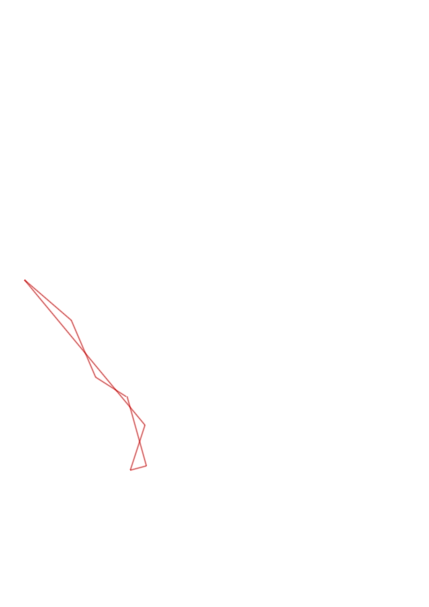
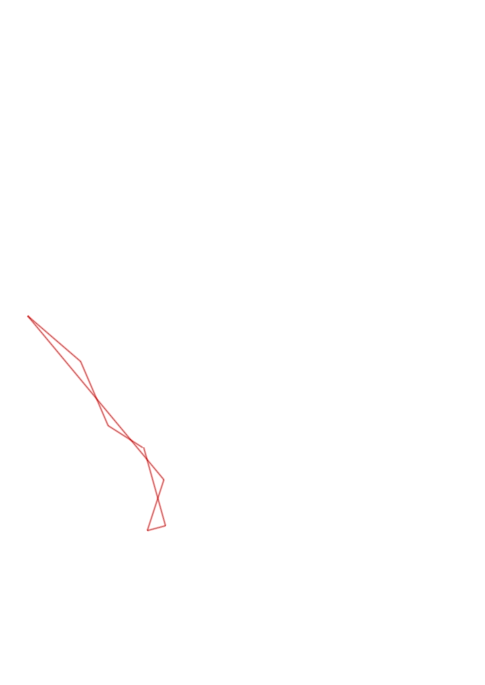

| Control |
Points |
Time Punched |
Distance |
Your Time |
Pace |
Place |
Fastest Time |
Median Time |
% Behind Fastest |
| 35 |
30 |
|
0.27 |
0:02:38 |
09:45 |
14 / 17 |
0:01:07 |
0:01:37 |
135% |
| 72 |
70 |
|
0.46 |
0:07:42 |
16:44 |
2 / 3 |
0:05:18 |
0:07:42 |
45% |
| 92 |
90 |
|
0.46 |
0:07:46 |
16:53 |
10 / 11 |
0:03:10 |
0:04:02 |
145% |
| 37 |
30 |
|
1.39 |
0:27:21 |
19:40 |
1 / 1 |
0:27:21 |
0:27:21 |
0% |
| 31 |
30 |
|
0.35 |
0:08:07 |
23:11 |
4 / 5 |
0:04:32 |
0:07:29 |
79% |
| 42 |
40 |
|
0.12 |
0:02:26 |
20:16 |
7 / 9 |
0:00:52 |
0:01:49 |
180% |
| Finish |
0 |
|
0.53 |
0:03:42 |
06:58 |
1 / 4 |
0:03:42 |
0:06:11 |
0% |
Total Distance Covered: 3.58km
Points Scored: 290
Late Penalty: 0
Final Score: 290
Total Time: 0hours 59minutes 42seconds
Efficiency: 81.01 points/km
 
